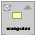

| Paket | mx.core |
| Schnittstelle | public interface IFlexDisplayObject extends IBitmapDrawable , IEventDispatcher |
| Umsetzer | BitmapAsset, ButtonAsset, DefaultDragImage, MovieClipAsset, MovieClipLoaderAsset, ProgrammaticSkin, SpriteAsset, SystemManager, TextFieldAsset, UIComponent |
| Sprachversion: | ActionScript 3.0 |
| Produktversion: | Flex 3 |
| Laufzeitversionen: | Flash Player 9, AIR 1.1 |
| Eigenschaft | Definiert von | ||
|---|---|---|---|
| accessibilityProperties : AccessibilityProperties
Die aktuellen Optionen für Eingabehilfen zur Barrierefreiheit dieses Anzeigeobjekts. | IFlexDisplayObject | ||
| alpha : Number
Gibt den Alphatransparenzwert des angegebenen Objekts an. | IFlexDisplayObject | ||
| blendMode : String
Ein Wert aus der BlendMode-Klasse, mit dem angegeben wird, welcher Mischmodus verwendet werden soll. | IFlexDisplayObject | ||
| cacheAsBitmap : Boolean
Wird diese Eigenschaft auf „true“ gesetzt, speichern Flash-Laufzeitumgebungen eine interne Bitmap-Darstellung des Anzeigeobjekts im Cache. | IFlexDisplayObject | ||
| filters : Array
Ein indiziertes Array, das alle dem Anzeigeobjekt derzeit zugeordneten filter-Objekte enthält. | IFlexDisplayObject | ||
| height : Number
Gibt die Höhe des Anzeigeobjekts in Pixeln an. | IFlexDisplayObject | ||
| loaderInfo : LoaderInfo [schreibgeschützt]
Gibt ein LoaderInfo-Objekt mit Informationen zum Laden der Datei zurück, zu der dieses Anzeigeobjekt gehört. | IFlexDisplayObject | ||
| mask : DisplayObject
Das aufrufende Anzeigeobjekt wird durch das angegebene mask-Objekt maskiert. | IFlexDisplayObject | ||
| measuredHeight : Number [schreibgeschützt]
Die gemessene Höhe dieses Objekts. | IFlexDisplayObject | ||
| measuredWidth : Number [schreibgeschützt]
Die gemessene Breite dieses Objekts. | IFlexDisplayObject | ||
| mouseX : Number [schreibgeschützt]
Gibt die x-Koordinate der Position der Maus oder des Benutzereingabegeräts in Pixeln an. | IFlexDisplayObject | ||
| mouseY : Number [schreibgeschützt]
Gibt die y-Koordinate der Position der Maus oder des Benutzereingabegeräts in Pixeln an. | IFlexDisplayObject | ||
| name : String
Gibt den Instanznamen des Anzeigeobjekts an. | IFlexDisplayObject | ||
| opaqueBackground : Object
Legt fest, ob das Anzeigeobjekt bei einer bestimmten Hintergrundfarbe undurchsichtig ist. | IFlexDisplayObject | ||
| parent : DisplayObjectContainer [schreibgeschützt]
Gibt das DisplayObjectContainer-Objekt an, das dieses Anzeigeobjekt enthält. | IFlexDisplayObject | ||
| root : DisplayObject [schreibgeschützt]
Bei einem Anzeigeobjekt in einer geladenen SWF-Datei ist die root-Eigenschaft das oberste Anzeigeobjekt in dem Teil der Baumstruktur der Anzeigeliste, der diese SWF-Datei repräsentiert. | IFlexDisplayObject | ||
| rotation : Number
Gibt die Drehung der DisplayObject-Instanz ausgehend von der ursprünglichen Ausrichtung in Grad an. | IFlexDisplayObject | ||
| scale9Grid : Rectangle
Das aktuell verwendete Skalierungsraster. | IFlexDisplayObject | ||
| scaleX : Number
Gibt die horizontale Skalierung (Prozentwert) des Objekts ausgehend vom Registrierungspunkt an. | IFlexDisplayObject | ||
| scaleY : Number
Gibt die vertikale Skalierung (Prozentwert) eines Objekts ausgehend vom Registrierungspunkt an. | IFlexDisplayObject | ||
| scrollRect : Rectangle
Die Begrenzungen des Bildlaufrechtecks für das Anzeigeobjekt. | IFlexDisplayObject | ||
| stage : Stage [schreibgeschützt]
Die Bühne des Anzeigeobjekts. | IFlexDisplayObject | ||
| transform : flash.geom:Transform
Ein Objekt mit Eigenschaften, die zur Matrix, Farbtransformation und Pixelbegrenzung eines Anzeigeobjekts gehören. | IFlexDisplayObject | ||
| visible : Boolean
Gibt an, ob das Anzeigeobjekt sichtbar ist oder nicht. | IFlexDisplayObject | ||
| width : Number
Gibt die Breite des Anzeigeobjekts in Pixeln an. | IFlexDisplayObject | ||
| x : Number
Gibt die x-Koordinate der DisplayObject-Instanz relativ zu den lokalen Koordinaten des übergeordneten DisplayObjectContainer-Objekts an. | IFlexDisplayObject | ||
| y : Number
Gibt die y-Koordinate der DisplayObject-Instanz relativ zu den lokalen Koordinaten des übergeordneten DisplayObjectContainer-Objekts an. | IFlexDisplayObject | ||
 Vererbte öffentliche Methoden ausblenden
Vererbte öffentliche Methoden ausblenden Vererbte öffentliche Methoden anzeigen
Vererbte öffentliche Methoden anzeigen| Methode | Definiert von | ||
|---|---|---|---|
 | addEventListener(type:String, listener:Function, useCapture:Boolean = false, priority:int = 0, useWeakReference:Boolean = false):void
Registriert ein Ereignis-Listener-Objekt bei einem EventDispatcher-Objekt, sodass der Listener über ein Ereignis benachrichtigt wird. | IEventDispatcher | |
|
Sendet ein Ereignis in den Ereignisablauf. | IEventDispatcher | |
Gibt ein Rechteck zurück, das den Bereich des Anzeigeobjekts in Bezug auf das Koordinatensystem des targetCoordinateSpace-Objekts definiert. | IFlexDisplayObject | ||
Gibt ein Rechteck zurück, das die Begrenzung des Anzeigeobjekts (ohne etwaige Striche oder Formen) definiert, und zwar aufgrund des vom Parameter „targetCoordinateSpace“ definierten Koordinatensystems. | IFlexDisplayObject | ||
Konvertiert das point-Objekt von den (globalen) Bühnenkoordinaten in die (lokalen) Koordinaten des Anzeigeobjekts. | IFlexDisplayObject | ||
|
Überprüft, ob das EventDispatcher-Objekt Listener für einen bestimmten Ereignistyp registriert hat. | IEventDispatcher | |
Untersucht den Begrenzungsrahmen des Anzeigeobjekts, um festzustellen, ob er sich mit dem Begrenzungsrahmen des obj-Anzeigeobjekts überschneidet. | IFlexDisplayObject | ||
Wertet das Anzeigeobjekt aus, um festzustellen, ob es den durch die Parameter „x“ und „y“ festgelegten Punkt überdeckt oder schneidet. | IFlexDisplayObject | ||
Konvertiert das point-Objekt von den (lokalen) Koordinaten des Anzeigeobjekts in die (globalen) Bühnenkoordinaten. | IFlexDisplayObject | ||
Verschiebt dieses Objekt an die angegebenen x- und y-Koordinaten. | IFlexDisplayObject | ||
|
Entfernt einen Listener aus dem EventDispatcher-Objekt. | IEventDispatcher | |
Legt die tatsächliche Größe dieses Objekts fest. | IFlexDisplayObject | ||
|
Überprüft, ob bei diesem EventDispatcher-Objekt oder bei einem seiner Vorgänger ein Ereignis-Listener für einen bestimmten Ereignistyp registriert ist. | IEventDispatcher | |
accessibilityProperties | Eigenschaft |
accessibilityProperties:AccessibilityProperties| Sprachversion: | ActionScript 3.0 |
| Produktversion: | Flex 3 |
| Laufzeitversionen: | Flash Player 9, AIR 1.1 |
Die aktuellen Optionen für Eingabehilfen zur Barrierefreiheit dieses Anzeigeobjekts. Wenn Sie die accessibilityProperties-Eigenschaft oder eines der Felder innerhalb von accessibilityProperties ändern, müssen Sie die Accessibility.updateProperties()-Methode aufrufen, damit diese Änderungen angewendet werden.
Hinweis: Bei einem in der Flash-Authoring-Umgebung erstellten Objekt wird für accessibilityProperties ein etwaiger Wert aus dem Bedienfeld „Eigenschaften“ für dieses Objekt übernommen.
Implementierung
public function get accessibilityProperties():AccessibilityProperties public function set accessibilityProperties(value:AccessibilityProperties):voidalpha | Eigenschaft |
alpha:Number| Sprachversion: | ActionScript 3.0 |
| Produktversion: | Flex 3 |
| Laufzeitversionen: | Flash Player 9, AIR 1.1 |
Gibt den Alphatransparenzwert des angegebenen Objekts an. Die zulässigen Werte liegen zwischen 0 (völlig transparent) und 1 (völlig undurchsichtig). Der Standardwert ist 1. Anzeigeobjekte mit einem alpha-Wert von 0 sind aktiv, auch wenn sie nicht sichtbar sind.
Implementierung
public function get alpha():Number public function set alpha(value:Number):voidblendMode | Eigenschaft |
blendMode:String| Sprachversion: | ActionScript 3.0 |
| Produktversion: | Flex 3 |
| Laufzeitversionen: | Flash Player 9, AIR 1.1 |
Ein Wert aus der BlendMode-Klasse, mit dem angegeben wird, welcher Mischmodus verwendet werden soll. Eine Bitmap kann intern auf zweierlei Weise gezeichnet werden. Wenn Sie einen Mischmodus oder eine externe Zuschneidemaske aktiviert haben, wird die Bitmap gezeichnet, indem dem Vektorrenderer ein Quadrat hinzugefügt wird. Wenn Sie versuchen, für die Eigenschaft einen unzulässigen Wert einzustellen, setzen Flash-Laufzeitumgebungen den Wert auf BlendMode.NORMAL.
Die blendMode-Eigenschaft wirkt sich auf jedes Pixel des Anzeigeobjekts aus. Dabei wird jedes Pixel aus den drei Grundfarben (Rot, Grün und Blau) jeweils mit einem Farbwert zwischen 0x00 und 0xFF zusammengestellt. Flash Player oder Adobe AIR vergleicht jede Grundfarbe eines Pixels im Movieclip mit der entsprechenden Farbe des Pixels im Hintergrund. Wenn blendMode beispielsweise auf BlendMode.LIGHTEN eingestellt ist, vergleicht Flash Player oder Adobe AIR den Rotwert des Anzeigeobjekts mit dem Rotwert des Hintergrunds und verwendet den helleren der beiden Werte für die rote Komponente der angezeigten Farbe.
In der folgenden Tabelle werden die Einstellungen von blendMode beschrieben. Die BlendMode-Klasse definiert String-Werte, die Sie verwenden können. Die Abbildungen in der Tabelle zeigen blendMode-Werte, die auf ein kreisförmiges Anzeigeobjekt (2) angewendet werden, das ein anderes Anzeigeobjekt (1) überlagert.


| BlendMode-Konstante | Abbildung | Beschreibung |
|---|---|---|
BlendMode.NORMAL |  | Das Anzeigeobjekt wird vor dem Hintergrund angezeigt. Die Pixelwerte des Anzeigeobjekts setzen die Werte des Hintergrunds außer Kraft. An den Stellen, an denen das Anzeigeobjekt transparent ist, wird der Hintergrund sichtbar. |
BlendMode.LAYER |  | Erzwingt die Erstellung einer Transparenzgruppe für das Anzeigeobjekt. Dies bedeutet, dass das Anzeigeobjekt vorher in einem temporären Puffer zusammengesetzt wird, bevor es weiterverarbeitet wird. Dies geschieht automatisch, wenn das Anzeigeobjekt im Voraus mithilfe der Bitmap-Zwischenspeicherung zwischengespeichert wird oder wenn es sich bei dem Anzeigeobjekt um einen Anzeigeobjekt-Container handelt, der mindestens ein untergeordnetes Objekt besitzt, dessen blendMode-Einstellung nicht BlendMode.NORMAL ist. Nicht unterstützt für GPU-Rendering.
|
BlendMode.MULTIPLY |  | Multipliziert die Werte der Grundfarben des Anzeigeobjekts mit denen der Hintergrundfarbe und normalisiert das Ergebnis durch Division durch 0xFF. Dies führt zu dunkleren Farben. Diese Einstellung wird im Allgemeinen für Schatten- und Tiefeneffekte verwendet.
Weisen beispielsweise die Grundfarbe (etwa Rot) eines Pixels im Anzeigeobjekt und eines Hintergrund-Pixels den Wert 0x88 auf, lautet das Ergebnis der Multiplikation 0x4840. Die Division durch 0xFF ergibt für diese Grundfarbe 0x48. Dies ist eine dunklere Farbe als die des Anzeigeobjekts bzw. des Hintergrunds. |
BlendMode.SCREEN |  | Multipliziert die Komplementärfarbe des Anzeigeobjekts mit der Komplementärfarbe der Hintergrundfarbe, was zu helleren Farbtönen führt. Diese Einstellung wird in der Regel für Hervorhebungen bzw. zum Entfernen von schwarzen Bereichen aus dem Anzeigeobjekt verwendet. |
BlendMode.LIGHTEN |  | Wählt die hellere Grundfarbe des Anzeigeobjekts und die Farbe des Hintergrunds aus (die Farben mit höheren Werten). Diese Einstellung wird normalerweise für Überlagerungen verwendet.
Weist das Anzeigeobjekt z. B. ein Pixel mit einem RGB-Wert von 0xFFCC33 und das Hintergrund-Pixel einen RGB-Wert von 0xDDF800 auf, lautet der resultierende RGB-Wert für das angezeigte Pixel 0xFFF833 (da 0xFF > 0xDD, 0xCC < 0xF8 und 0x33 > 0x00 = 33). Nicht unterstützt für GPU-Rendering. |
BlendMode.DARKEN |  | Wählt die dunklere Grundfarbe des Anzeigeobjekts und des Hintergrunds aus (die niedrigeren Werte). Diese Einstellung wird normalerweise für Überlagerungen verwendet.
Weist das Anzeigeobjekt z. B. ein Pixel mit einem RGB-Wert von 0xFFCC33 und das Hintergrund-Pixel einen RGB-Wert von 0xDDF800 auf, lautet der resultierende RGB-Wert für das angezeigte Pixel 0xDDCC00 (da 0xFF > 0xDD, 0xCC < 0xF8 und 0x33 > 0x00 = 33). Nicht unterstützt für GPU-Rendering. |
BlendMode.DIFFERENCE |  | Vergleicht die Grundfarben des Anzeigeobjekts mit den Farben des Hintergrunds und subtrahiert für die beiden Grundfarben den dunkleren Wert von dem helleren Wert. Diese Einstellung wird normalerweise zur Farbverstärkung verwendet.
Wenn das Anzeigeobjekt z. B. ein Pixel mit dem RGB-Farbwert 0xFFCC33 aufweist und das Pixel im Hintergrund den RGB-Wert 0xDDf800 hat, dann erhält das angezeigte Pixel den Wert 0x222C33 (da 0xFF - 0xDD = 0x22, 0xF8 - 0xCC = 0x2C und 0x33 - 0x00 = 0x33 ist). |
BlendMode.ADD |  | Addiert den Wert der Grundfarben des Anzeigeobjekts zu den Farben des Hintergrunds (mit einem oberen Grenzwert von 0xFF). Diese Einstellung wird im Allgemeinen für Animationen von heller werdenden Auflösungen zwischen zwei Objekten verwendet.
Wenn das Anzeigeobjekt z. B. ein Pixel mit dem RGB-Farbwert 0xAAA633 aufweist und das Pixel im Hintergrund den RGB-Wert 0xDD2200 hat, dann erhält das angezeigte Pixel den Wert 0xFFC833 (da 0xAA + 0xDD > 0xFF, 0xA6 + 0x22 = 0xC8 und 0x33 + 0x00 = 0x33 ist). |
BlendMode.SUBTRACT |  | Subtrahiert die Werte der Grundfarben des Anzeigeobjekts von den Werten der Hintergrundfarbe (mit einem unteren Grenzwert von 0). Diese Einstellung wird im Allgemeinen für Animationen von dunkler werdenden Auflösungen zwischen zwei Objekten verwendet.
Weist das Anzeigeobjekt z. B. ein Pixel mit einem RGB-Wert von 0xAA2233 und das Hintergrund-Pixel einen RGB-Wert von 0xDDA600 auf, lautet der resultierende RGB-Wert für das angezeigte Pixel 0x338400 (da 0xDD - 0xAA = 0x33, 0xA6 - 0x22 = 0x84 und 0x00 - 0x33 < 0x00). |
BlendMode.INVERT |  | Kehrt den Hintergrund um. |
BlendMode.ALPHA |  | Wendet den Alphawert jedes Pixels des Anzeigeobjekts auf den Hintergrund an. Dieser Vorgang erfordert, dass die blendMode-Einstellung des übergeordneten Anzeigeobjekts auf BlendMode.LAYER gesetzt wird. In dieser Abbildung gilt beispielsweise für das übergeordnete Anzeigeobjekt, einen weißen Hintergrund, die Einstellung blendMode = BlendMode.LAYER. Nicht unterstützt für GPU-Rendering. |
BlendMode.ERASE |  | Löscht den Hintergrund anhand der Alphawerte des Anzeigeobjekts. Dieser Vorgang erfordert, dass die blendMode-Einstellung des übergeordneten Anzeigeobjekts auf BlendMode.LAYER gesetzt wird. In dieser Abbildung gilt beispielsweise für das übergeordnete Anzeigeobjekt, einen weißen Hintergrund, die Einstellung blendMode = BlendMode.LAYER. Nicht unterstützt für GPU-Rendering. |
BlendMode.OVERLAY |  | Passt die Farbe jedes Pixels entsprechend der Dunkelheit des Hintergrunds an. Wenn der Hintergrund heller ist als 50 % Grau, werden die Farben des Anzeigeobjekts und des Hintergrunds überlagert, um hellere Farben zu erhalten. Ist der Hintergrund dagegen dunkler als 50 % Grau, werden die Farben multipliziert, was zu dunkleren Farben führt. Diese Einstellung wird normalerweise für Schattierungen verwendet. Nicht unterstützt für GPU-Rendering. |
BlendMode.HARDLIGHT |  | Passt die Farbe jedes Pixels entsprechend der Dunkelheit des Anzeigeobjekts an. Ist das Anzeigeobjekt heller als 50 % Grau, werden die Farben von Anzeigeobjekt und Hintergrund überlagert, was zu einer helleren Farbe führt. Ist das Anzeigeobjekt dagegen dunkler als 50 % Grau, werden die Farben multipliziert, was zu dunkleren Farben führt. Diese Einstellung wird normalerweise für Schattierungen verwendet. Nicht unterstützt für GPU-Rendering. |
BlendMode.SHADER | n. zutr. | Passt die Farbe mithilfe einer Standard-Shaderroutine an. Der verwendete Shader wird als die der blendShader-Eigenschaft zugewiesene Shader-Instanz festgelegt. Wird die blendShader-Eigenschaft eines Anzeigeobjekts auf eine Shader-Instanz gesetzt, so wird die blendMode-Eigenschaft des Anzeigeobjekts automatisch auf BlendMode.SHADER gesetzt. Wird die blendMode-Eigenschaft auf BlendMode.SHADER gesetzt, ohne vorher die blendShader-Eigenschaft zu setzen, so wird die blendMode-Eigenschaft auf BlendMode.NORMAL gesetzt. Nicht unterstützt für GPU-Rendering. |
Implementierung
public function get blendMode():String public function set blendMode(value:String):voidcacheAsBitmap | Eigenschaft |
cacheAsBitmap:Boolean| Sprachversion: | ActionScript 3.0 |
| Produktversion: | Flex 3 |
| Laufzeitversionen: | Flash Player 9, AIR 1.1 |
Wird diese Eigenschaft auf true gesetzt, speichern Flash-Laufzeitumgebungen eine interne Bitmap-Darstellung des Anzeigeobjekts im Cache. Diese Zwischenspeicherung kann bei Anzeigeobjekten mit komplexen Vektorgrafiken ggf. die Leistung verbessern.
Alle Vektordaten eines Anzeigeobjekts, das eine zwischengespeicherte Bitmap besitzt, werden nicht in die Hauptanzeige, sondern in eine Bitmap gezeichnet. Wenn cacheAsBitmapMatrix null ist oder nicht unterstützt wird, wird die Bitmap als nicht gedehnte, nicht gedrehte Pixel, die an den nächsten Pixelgrenzen ausgerichtet sind, in die Hauptanzeige kopiert. Die Pixel werden dem übergeordneten Objekt 1 zu 1 zugeordnet. Ändern sich die Grenzen der Bitmap, wird diese nicht gedehnt, sondern neu erstellt.
Wenn cacheAsBitmapMatrix nicht null ist und unterstützt wird, wird das Objekt mit dieser Matrix in die Bitmap außerhalb des Bildschirms gezeichnet und die gestreckten und/oder gedrehten Ergebnisse dieser Darstellung werden verwendet, um das Objekt in der Hauptanzeige zu zeichnen.
Interne Bitmaps werden nur erstellt, wenn die cacheAsBitmap-Eigenschaft auf true gesetzt ist.
Nachdem Sie die cacheAsBitmap-Eigenschaft auf true gesetzt haben, ändert sich die Wiedergabe nicht. Allerdings führt das Anzeigeobjekt die Ausrichtung an Pixeln automatisch durch. Die Animationsgeschwindigkeit kann je nach Komplexität des Vektorinhalts deutlich schneller bzw. langsamer ablaufen.
Die cacheAsBitmap-Eigenschaft wird jeweils automatisch auf true gesetzt, wenn Sie einen Filter auf ein Anzeigeobjekt anwenden (vorausgesetzt, sein filter-Array ist nicht leer). Und wenn auf ein Anzeigeobjekt ein Filter angewendet worden ist, wird cacheAsBitmap für dieses Anzeigeobjekt als true gemeldet, selbst wenn Sie die Eigenschaft auf false setzen. Wenn Sie sämtliche Filter eines Anzeigeobjekts löschen, werden die cacheAsBitmap-Einstellungen auf ihren vorherigen Stand zurückgesetzt.
In einigen Fällen verwendet ein Anzeigeobjekt keine Bitmap, auch wenn die cacheAsBitmap-Eigenschaft auf true gesetzt wurde. Stattdessen erfolgt die Wiedergabe aufgrund von Vektordaten, und zwar in den folgenden Fällen:
- Die Bitmap ist zu groß. In AIR 1.5 und Flash Player 10 ist die maximale Höhe oder Breite eines Bitmapbilds 8.191 Pixel, die gesamte Pixelzahl darf 16.777.215 nicht übersteigen. (Wenn ein Bitmapbild also 8.191 Pixel breit ist, darf es nur 2.048 Pixel hoch sein.) In Flash Player 9 und niedriger liegt die Grenze bei je 2.880 Pixel Höhe und Breite.
- Der Bitmap kann kein Speicher zugewiesen werden (nicht genügend Arbeitsspeicher vorhanden).
Die cacheAsBitmap-Eigenschaft wird am besten mit Movieclips verwendet, die vorwiegend statischen Inhalt haben und nicht viel skaliert und gedreht werden. Bei solchen Movieclips kann cacheAsBitmap zu einer deutlichen Performance-Steigerung führen, wenn der Movieclip „übersetzt“ wird (wenn seine x- und y-Position geändert wird).
Implementierung
public function get cacheAsBitmap():Boolean public function set cacheAsBitmap(value:Boolean):voidfilters | Eigenschaft |
filters:Array| Sprachversion: | ActionScript 3.0 |
| Produktversion: | Flex 3 |
| Laufzeitversionen: | Flash Player 9, AIR 1.1 |
Ein indiziertes Array, das alle dem Anzeigeobjekt derzeit zugeordneten filter-Objekte enthält. Die Klassen im flash.filters-Paket definieren spezifische Filter, die Sie verwenden können.
Filter können entweder während der Entwurfsphase in Flash-Professional oder zur Laufzeit durch Verwendung von ActionScript-Code angewendet werden. Damit Sie einen Filter mithilfe von ActionScript anwenden können, müssen Sie zunächst eine temporäre Kopie des gesamten filters-Arrays erstellen, dann das temporäre Array ändern und schließlich den Wert des temporären Arrays wieder auf das filters-Array zurücksetzen. Es ist nicht möglich, ein neues filter-Objekt direkt dem filters-Array hinzuzufügen.
Um einen Filter mithilfe von ActionScript hinzuzufügen, müssen Sie die folgenden Schritte befolgen (wobei myDisplayObject das Ziel-Anzeigeobjekt ist):
- Erstellen Sie mithilfe der Konstruktormethode der gewählten Filterklasse ein neues filter-Objekt.
- Weisen Sie den Wert des
myDisplayObject.filters-Arrays einem temporären Array zu, z. B. einem Array mit dem NamenmyFilters. - Fügen Sie das neue filter-Objekt dem temporären Array
myFiltershinzu. - Weisen Sie den Wert des temporären Arrays dem
myDisplayObject.filters-Array zu.
Wenn das filters-Array nicht definiert ist, müssen Sie kein temporäres Array verwenden. Stattdessen können Sie direkt ein Array-Literal mit einem oder mehreren selbst definierten Filterobjekten zuweisen. Im ersten Beispiel wird im Abschnitt „Beispiele“ mithilfe von Code, der sowohl definierte als auch undefinierte filters-Arrays verarbeiten kann, ein Schlagschatten-Filter hinzugefügt.
Um ein vorhandenes filter-Objekt zu ändern, müssen Sie eine Technik anwenden, bei der eine Kopie des filters-Arrays geändert wird:
- Weisen Sie den Wert des
filters-Arrays einem temporären Array zu, z. B. einem Array mit dem NamenmyFilters. - Ändern Sie die Eigenschaft mithilfe des temporären Arrays
myFilters. Um beispielsweise die quality-Eigenschaft des ersten Filters im Array zu ändern, können Sie den folgenden Code anwenden:myFilters[0].quality = 1; - Weisen Sie den Wert des temporären Arrays dem
filters-Array zu.
Wenn ein Anzeigeobjekt während des Ladevorgangs mit einem Filter verknüpft ist, ist dieses so gekennzeichnet, dass es sich selbst als transparente Bitmap zwischenspeichert. Von diesem Punkt an speichert der Player das Anzeigeobjekt als Bitmap zwischen, solange das Anzeigeobjekt eine zulässige Filterliste besitzt. Diese Quell-Bitmap wird als Quellbild für die Filtereffekte verwendet. Jedes Anzeigeobjekt besitzt in der Regel zwei Bitmaps: eine mit dem ursprünglichen Quellanzeigeobjekt, und eine zweite für das nach dem Filtern entstehende Bild. Dieses Ergebnisbild wird für die Wiedergabe verwendet. Solange sich das Anzeigeobjekt nicht ändert, muss das Ergebnisbild nicht aktualisiert werden.
Das flash.filters-Paket umfasst Klassen für Filter. Um beispielsweise einen DropShadow-Filter zu erstellen, würden Sie folgenden Code schreiben:
import flash.filters.DropShadowFilter
var myFilter:DropShadowFilter = new DropShadowFilter (distance, angle, color, alpha, blurX, blurY, quality, inner, knockout)
Mithilfe des Operators is können Sie festlegen, welcher Filtertyp den einzelnen Indexpositionen im filter-Array zugewiesen werden soll. Der folgende Code zeigt z. B., wie Sie die Position des ersten Filters im filters-Array (DropShadowFilter) bestimmen:
import flash.text.TextField;
import flash.filters.*;
var tf:TextField = new TextField();
var filter1:DropShadowFilter = new DropShadowFilter();
var filter2:GradientGlowFilter = new GradientGlowFilter();
tf.filters = [filter1, filter2];
tf.text = "DropShadow index: " + filterPosition(tf, DropShadowFilter).toString(); // 0
addChild(tf)
function filterPosition(displayObject:DisplayObject, filterClass:Class):int {
for (var i:uint = 0; i < displayObject.filters.length; i++) {
if (displayObject.filters[i] is filterClass) {
return i;
}
}
return -1;
}
Hinweis: Da Sie ein neues filter-Objekt dem DisplayObject.filters-Array nicht direkt hinzufügen können, hat der folgende Code keine Auswirkung auf das Ziel-Anzeigeobjekt myDisplayObject:
myDisplayObject.filters.push(myDropShadow);
Implementierung
public function get filters():Array public function set filters(value:Array):voidheight | Eigenschaft |
height:Number| Sprachversion: | ActionScript 3.0 |
| Produktversion: | Flex 3 |
| Laufzeitversionen: | Flash Player 9, AIR 1.1 |
Gibt die Höhe des Anzeigeobjekts in Pixeln an. Die Höhe wird auf Basis der Begrenzungen des Inhalts des Anzeigeobjekts berechnet. Wenn Sie die Eigenschaft height festsetzen, wird die Eigenschaft scaleY entsprechend angepasst, wie im folgenden Code gezeigt.
var rect:Shape = new Shape();
rect.graphics.beginFill(0xFF0000);
rect.graphics.drawRect(0, 0, 100, 100);
trace(rect.scaleY) // 1;
rect.height = 200;
trace(rect.scaleY) // 2;Abgesehen von TextField- und Video-Objekten, hat ein Anzeigeobjekt ohne Inhalt (z. B. ein leeres Sprite) eine Höhe von 0, selbst wenn Sie versuchen, height auf einen anderen Wert zu setzen.
Implementierung
public function get height():Number public function set height(value:Number):voidloaderInfo | Eigenschaft |
loaderInfo:LoaderInfo [schreibgeschützt] | Sprachversion: | ActionScript 3.0 |
| Produktversion: | Flex 3 |
| Laufzeitversionen: | Flash Player 9, AIR 1.1 |
Gibt ein LoaderInfo-Objekt mit Informationen zum Laden der Datei zurück, zu der dieses Anzeigeobjekt gehört. Die loaderInfo-Eigenschaft ist nur für das root-Anzeigeobjekt einer SWF-Datei oder für eine geladene Bitmap definiert (nicht jedoch für eine Bitmap, die mit ActionScript gezeichnet wird). Um das loaderInfo-Objekt zu finden, das der SWF-Datei zugeordnet ist, die das Anzeigeobjekt myDisplayObject enthält, verwenden Sie myDisplayObject.root.loaderInfo.
Eine große SWF-Datei kann ihren Download überwachen, indem sie this.root.loaderInfo.addEventListener(Event.COMPLETE, func) aufruft.
Implementierung
public function get loaderInfo():LoaderInfomask | Eigenschaft |
mask:DisplayObject| Sprachversion: | ActionScript 3.0 |
| Produktversion: | Flex 3 |
| Laufzeitversionen: | Flash Player 9, AIR 1.1 |
Das aufrufende Anzeigeobjekt wird durch das angegebene mask-Objekt maskiert. Um sicherzustellen, dass das Maskieren bei skalierter Bühne funktioniert, muss sich das mask-Anzeigeobjekt in einem aktiven Bereich der Anzeigeliste befinden. Das mask-Objekt selbst wird nicht gezeichnet. Setzen Sie mask auf null, um die Maske zu entfernen.
Ein mask-Objekt kann nur skaliert werden, wenn es sich in der Anzeigeliste befindet. Ein mask-Sprite-Objekt kann nur gezogen werden (durch Aufrufen seiner startDrag()-Methode), wenn es sich in der Anzeigeliste befindet. Um die startDrag()-Methode eines mask-Sprite-Objekts basierend auf einem mouseDown-Ereignis aufzurufen, das vom Sprite ausgelöst wurde, setzen Sie die buttonMode-Eigenschaft des Sprites auf true.
Wenn Anzeigeobjekte zwischengespeichert werden, indem die cacheAsBitmap-Eigenschaft auf true und die cacheAsBitmapMatrix-Eigenschaft auf ein Matrix-Objekt gesetzt wird, müssen sowohl die Maske als auch das Anzeigeobjekt, das maskiert wird, Teil derselben zwischengespeicherten Bitmap sein. Deshalb muss die Maske ein untergeordnetes Element des Anzeigeobjekts sein, wenn das Anzeigeobjekt zwischengespeichert wird. Wenn ein übergeordnetes Element des Anzeigeobjekts auf der Anzeigeliste zwischengespeichert wird, muss die Maske ein untergeordnetes Element dieses übergeordneten Elements oder eines seiner untergeordneten Elemente sein. Wenn mehrere übergeordnete Elemente des maskierten Objekts zwischengespeichert werden, muss die Maske ein untergeordnetes Element des zwischengespeicherten Containers sein, der dem maskierten Objekt in der Anzeigeliste am nächsten ist.
Hinweis: Ein einzelnes mask-Objekt kann nicht zum Maskieren mehrerer aufrufender Anzeigeobjekte verwendet werden. Wird das mask-Objekt einem zweiten Anzeigeobjekt zugewiesen, wird es als Maske des ersten Objekts entfernt, dessen mask-Eigenschaft sich dadurch in null ändert.
Implementierung
public function get mask():DisplayObject public function set mask(value:DisplayObject):voidmeasuredHeight | Eigenschaft |
measuredHeight:Number [schreibgeschützt] | Sprachversion: | ActionScript 3.0 |
| Produktversion: | Flex 3 |
| Laufzeitversionen: | Flash Player 9, AIR 1.1 |
Die gemessene Höhe dieses Objekts.
Dies wird in der Regel für grafische Skins fest einprogrammiert, weil diese Zahl einfach die Anzahl von Pixeln in der Grafik ist. Bei Code-Skins kann dies auch fest programmiert sein, wenn Sie erwarten, dass das Objekt in einer bestimmten Größe gezeichnet wird. Wenn sich die Größe je nach Eigenschaften ändern kann, empfiehlt sich auch ein ILayoutManagerClient, damit eine measure()-Methode zu einem geeigneten Zeitpunkt aufgerufen werden kann und Sie die Möglichkeit erhalten, eine measuredHeight zu berechnen.
Implementierung
public function get measuredHeight():NumbermeasuredWidth | Eigenschaft |
measuredWidth:Number [schreibgeschützt] | Sprachversion: | ActionScript 3.0 |
| Produktversion: | Flex 3 |
| Laufzeitversionen: | Flash Player 9, AIR 1.1 |
Die gemessene Breite dieses Objekts.
Dies wird in der Regel für grafische Skins fest einprogrammiert, weil diese Zahl einfach die Anzahl von Pixeln in der Grafik ist. Bei Code-Skins kann dies auch fest programmiert sein, wenn Sie erwarten, dass das Objekt in einer bestimmten Größe gezeichnet wird. Wenn sich die Größe je nach Eigenschaften ändern kann, empfiehlt sich auch ein ILayoutManagerClient, damit eine measure()-Methode zu einem geeigneten Zeitpunkt aufgerufen werden kann und Sie die Möglichkeit erhalten, eine measuredHeight zu berechnen.
Implementierung
public function get measuredWidth():NumbermouseX | Eigenschaft |
mouseX:Number [schreibgeschützt] | Sprachversion: | ActionScript 3.0 |
| Produktversion: | Flex 3 |
| Laufzeitversionen: | Flash Player 9, AIR 1.1 |
Gibt die x-Koordinate der Position der Maus oder des Benutzereingabegeräts in Pixeln an.
Hinweis: Bei einem gedrehten Anzeigeobjekt spiegelt die zurückgegebene x-Koordinate das nicht gedrehte Objekt wider.
Implementierung
public function get mouseX():NumbermouseY | Eigenschaft |
mouseY:Number [schreibgeschützt] | Sprachversion: | ActionScript 3.0 |
| Produktversion: | Flex 3 |
| Laufzeitversionen: | Flash Player 9, AIR 1.1 |
Gibt die y-Koordinate der Position der Maus oder des Benutzereingabegeräts in Pixeln an.
Hinweis: Bei einem gedrehten Anzeigeobjekt spiegelt die zurückgegebene y-Koordinate das nicht gedrehte Objekt wider.
Implementierung
public function get mouseY():Numbername | Eigenschaft |
name:String| Sprachversion: | ActionScript 3.0 |
| Produktversion: | Flex 3 |
| Laufzeitversionen: | Flash Player 9, AIR 1.1 |
Gibt den Instanznamen des Anzeigeobjekts an. Das Objekt kann in der Child-Liste seines übergeordneten Anzeigeobjekt-Containers identifiziert werden, indem die getChildByName()-Methode des Anzeigeobjekt-Containers aufgerufen wird.
Implementierung
public function get name():String public function set name(value:String):voidopaqueBackground | Eigenschaft |
opaqueBackground:Object| Sprachversion: | ActionScript 3.0 |
| Produktversion: | Flex 3 |
| Laufzeitversionen: | Flash Player 9, AIR 1.1 |
Legt fest, ob das Anzeigeobjekt bei einer bestimmten Hintergrundfarbe undurchsichtig ist. Eine transparente Bitmap enthält Alphakanaldaten und wird durchsichtig gezeichnet. Eine undurchsichtige Bitmap hat keinen Alphakanal (und wird schneller gerendert als eine transparente Bitmap). Wenn die Bitmap durchsichtig ist, geben Sie an, welche Hintergrundfarbe sie verwenden soll.
Wird ein numerischer Wert angegeben, ist die Oberfläche undurchsichtig (nicht transparent) und besitzt die durch diese Nummer bezeichnete RGB-Hintergrundfarbe. Bei einem Wert von null (dem Standardwert) erhält das Anzeigeobjekt einen transparenten Hintergrund.
Die opaqueBackground-Eigenschaft ist vorwiegend für den Einsatz mit der cacheAsBitmap-Eigenschaft gedacht, um die Wiedergabe zu optimieren. Bei Anzeigeobjekten, in denen die cacheAsBitmap-Eigenschaft auf „true“ gesetzt wurde, kann das Setzen von opaqueBackground die Wiedergabe-Performance verbessern.
Beim Aufrufen einer hitTestPoint()-Methode, bei der der Parameter shapeFlag auf true gesetzt wurde, wird der Bereich für den undurchsichtigen Hintergrund nicht angepasst.
Der Bereich für den undurchsichtigen Hintergrund reagiert nicht auf Mausereignisse.
Implementierung
public function get opaqueBackground():Object public function set opaqueBackground(value:Object):voidparent | Eigenschaft |
parent:DisplayObjectContainer [schreibgeschützt] | Sprachversion: | ActionScript 3.0 |
| Produktversion: | Flex 3 |
| Laufzeitversionen: | Flash Player 9, AIR 1.1 |
Gibt das DisplayObjectContainer-Objekt an, das dieses Anzeigeobjekt enthält. Mit der parent-Eigenschaft können Sie einen relativen Pfad zu Anzeigeobjekten angeben, die in der Anzeigelistenhierarchie über dem aktuellen Anzeigeobjekt liegen.
Sie können parent verwenden, um sich wie im folgenden Beispiel in der Anzeigeliste um mehrere Stufen nach oben zu bewegen:
this.parent.parent.alpha = 20;
Implementierung
public function get parent():DisplayObjectContainerroot | Eigenschaft |
root:DisplayObject [schreibgeschützt] | Sprachversion: | ActionScript 3.0 |
| Produktversion: | Flex 3 |
| Laufzeitversionen: | Flash Player 9, AIR 1.1 |
Bei einem Anzeigeobjekt in einer geladenen SWF-Datei ist die Eigenschaft root das oberste Anzeigeobjekt in dem Teil der Baumstruktur der Anzeigeliste, der diese SWF-Datei repräsentiert. Bei einem Bitmap-Objekt, das eine geladene Bilddatei repräsentiert, steht die root-Eigenschaft für das Bitmap-Objekt selbst. Bei der Instanz der Hauptklasse der ersten geladenen SWF-Datei steht die root-Eigenschaft für das Anzeigeobjekt selbst. Die root-Eigenschaft des Stage-Objekts steht für das Stage-Objekt selbst. Die root-Eigenschaft ist für jedes Anzeigeobjekt, das nicht in die Anzeigeliste aufgenommen wurde, auf null gesetzt. Eine Ausnahme ist, wenn es in einen Anzeigeobjekt-Container eingefügt wurde, der sich zwar nicht in der Anzeigeliste befindet, aber dem obersten Anzeigeobjekt einer geladenen SWF-Datei untergeordnet ist.
Angenommen, Sie erstellen ein neues Sprite-Objekt, indem Sie die Konstruktormethode Sprite() aufrufen. Seine root-Eigenschaft hat dann den Wert null, bis Sie das Objekt in die Anzeigeliste einfügen (oder in einen Objekt-Container, der sich zwar nicht in der Anzeigeliste befindet, aber dem obersten Anzeigeobjekt einer geladenen SWF-Datei untergeordnet ist).
Bei einer geladenen SWF-Datei ist die root-Eigenschaft des obersten Anzeigeobjekts in der SWF-Datei auf sich selbst gesetzt, auch wenn sich das Loader-Objekt zum Laden der Datei nicht in der Anzeigeliste befindet. Die root-Eigenschaft des Loader-Objekts ist nicht gesetzt, bis es als untergeordnetes Objekt eines Anzeigeobjekts hinzugefügt wird, dessen root-Eigenschaft gesetzt ist.
Implementierung
public function get root():DisplayObjectrotation | Eigenschaft |
rotation:Number| Sprachversion: | ActionScript 3.0 |
| Produktversion: | Flex 3 |
| Laufzeitversionen: | Flash Player 9, AIR 1.1 |
Gibt die Drehung der DisplayObject-Instanz ausgehend von der ursprünglichen Ausrichtung in Grad an. Werte zwischen 0 und 180 geben eine Rechtsdrehung, Werte zwischen 0 und -180 eine Linksdrehung an. Werte außerhalb dieses Bereichs werden zu 360 addiert bzw. von 360 subtrahiert, damit sich ein Wert innerhalb des Bereichs ergibt. Die Anweisung my_video.rotation = 450 ist z. B. mit my_video.rotation = 90 identisch.
Implementierung
public function get rotation():Number public function set rotation(value:Number):voidscale9Grid | Eigenschaft |
scale9Grid:Rectangle| Sprachversion: | ActionScript 3.0 |
| Produktversion: | Flex 3 |
| Laufzeitversionen: | Flash Player 9, AIR 1.1 |
Das aktuell verwendete Skalierungsraster. Ist diese Eigenschaft auf null gesetzt, wird bei einer Skalierungstransformation das gesamte Anzeigeobjekt normal skaliert.
Wenn Sie dagegen die scale9Grid-Eigenschaft definieren, wird das Anzeigeobjekt basierend auf dem scale9Grid-Rechteck in ein Raster mit 9 Feldern eingeteilt, welches den inneren Bereich des Rasters definiert. Dieses Raster besitzt acht weitere Felder:
- Das Feld links oben, außerhalb des Rechtecks.
- Das Feld oberhalb des Rechtecks.
- Das Feld rechts oben, außerhalb des Rechtecks.
- Das Feld links vom Rechteck.
- Das Feld rechts vom Rechteck.
- Das Feld links unten, außerhalb des Rechtecks.
- Das Feld unterhalb des Rechtecks.
- Das Feld rechts unten, außerhalb des Rechtecks.
Die acht Felder außerhalb des Rechtecks können Sie sich als einen Bilderrahmen denken, auf den beim Skalieren spezielle Regeln angewendet werden.
Wenn die scale9Grid-Eigenschaft gesetzt ist und ein Anzeigeobjekt skaliert wird, werden auch alle Texte und Farbverläufe normal skaliert. Für andere Objekttypen gelten allerdings die folgenden Regeln:
- Der Inhalt im inneren Feld wird normal skaliert.
- Der Inhalt in den Eckfeldern wird nicht skaliert.
- Der Inhalt im oberen und unteren Feld wird nur horizontal skaliert. Der Inhalt im linken und rechten Feld wird nur vertikal skaliert.
- Alle Füllungen (einschließlich Bitmaps, Videos und Farbverläufe) werden dabei gedehnt, um in ihre jeweiligen Formen zu passen.
Wird das Anzeigeobjekt gedreht, zeigen alle nachfolgende Skalierungen normales Verhalten (und die scale9Grid-Eigenschaft wird ignoriert).
Betrachten Sie beispielsweise das folgende Anzeigeobjekt und das Rechteck, das als scale9Grid-Eigenschaft des Anzeigeobjekts angewendet wird:

Das Anzeigeobjekt. | 
Im roten Rechteck wird das |
Wenn das Anzeigeobjekt skaliert oder gedehnt wird, werden die Objekte innerhalb des Rechtecks normal skaliert, aber die Objekte außerhalb des Rechtecks werden gemäß den Regeln für ein scale9Grid-Raster skaliert:
| Auf 75 % skaliert: |  |
| Auf 50 % skaliert: |  |
| Auf 25 % skaliert: |  |
| Horizontal auf 150 % gedehnt: |  |
Normalerweise wird die scale9Grid-Eigenschaft angewendet, um ein Anzeigeobjekt als Komponente einzurichten, deren Randbereiche bei einer Skalierung der Komponente weiterhin in gleicher Breite angezeigt werden sollen.
Implementierung
public function get scale9Grid():Rectangle public function set scale9Grid(value:Rectangle):voidscaleX | Eigenschaft |
scaleX:Number| Sprachversion: | ActionScript 3.0 |
| Produktversion: | Flex 3 |
| Laufzeitversionen: | Flash Player 9, AIR 1.1 |
Gibt die horizontale Skalierung (Prozentwert) des Objekts ausgehend vom Registrierungspunkt an. Der Standardregistrierungspunkt liegt bei (0,0). 1,0 entspricht 100 % Skalierung.
Die Skalierung des lokalen Koordinatensystems ändert die Werte der x- und y-Eigenschaften, die in ganzen Pixeln angegeben werden.
Implementierung
public function get scaleX():Number public function set scaleX(value:Number):voidscaleY | Eigenschaft |
scaleY:Number| Sprachversion: | ActionScript 3.0 |
| Produktversion: | Flex 3 |
| Laufzeitversionen: | Flash Player 9, AIR 1.1 |
Gibt die vertikale Skalierung (Prozentwert) eines Objekts ausgehend vom Registrierungspunkt an. Der Standardregistrierungspunkt liegt bei (0,0). 1,0 entspricht 100 % Skalierung.
Die Skalierung des lokalen Koordinatensystems ändert die Werte der x- und y-Eigenschaften, die in ganzen Pixeln angegeben werden.
Implementierung
public function get scaleY():Number public function set scaleY(value:Number):voidscrollRect | Eigenschaft |
scrollRect:Rectangle| Sprachversion: | ActionScript 3.0 |
| Produktversion: | Flex 3 |
| Laufzeitversionen: | Flash Player 9, AIR 1.1 |
Die Begrenzungen des Bildlaufrechtecks für das Anzeigeobjekt. Das Anzeigeobjekt wird auf die vom Rechteck definierte Größe zugeschnitten. Innerhalb dieses Rechtecks wird ein Bildlauf durchgeführt, wenn Sie die Eigenschaften x und y des scrollRect-Objekts ändern.
Die Eigenschaften des scrollRect-Rechtecks verwenden den Koordinatenraum des Anzeigeobjekts und werden ebenso wie das Gesamtanzeigeobjekt skaliert. Die Eckbegrenzungen des zugeschnittenen Fensters des Anzeigeobjekts mit Bildlauffunktion liegen auf dem Ursprung des Anzeigeobjekts (0,0) sowie auf dem durch die Rechteckbreite und -höhe definierten Punkt. Diese Punkte sind nicht um den Ursprung zentriert, sondern verwenden den Ursprung, um die linke obere Ecke zu definieren. Ein Anzeigeobjekt mit Bildlauffunktion wird immer pixelweise verschoben.
Sie können den Objektausschnitt nach links und rechts verschieben, indem Sie die x-Eigenschaft des scrollRect-Rechteckobjekts setzen. Sie können den Objektausschnitt nach oben und unten verschieben, indem Sie die y-Eigenschaft des scrollRect-Rechteckobjekts setzen. Wenn das Anzeigeobjekt um 90° gedreht wird und Sie es nach links und rechts verschieben, wird es nach oben und unten verschoben.
Beachten Sie, dass Änderungen an der scrollRect-Eigenschaft nur verarbeitet werden, wenn das Objekt gerendert wird. Deshalb produzieren Methoden wie localToGlobal möglicherweise nicht das erwartete Ergebnis, wenn sie direkt nach dem Ändern von scrollRect aufgerufen werden.
Hinweis: Ab Flash Player 11.4/AIR 3.4 werden negative Werte für die Breite oder Höhe des Rechtecks auf 0 geändert.
Implementierung
public function get scrollRect():Rectangle public function set scrollRect(value:Rectangle):voidstage | Eigenschaft |
stage:Stage [schreibgeschützt] | Sprachversion: | ActionScript 3.0 |
| Produktversion: | Flex 3 |
| Laufzeitversionen: | Flash Player 9, AIR 1.1 |
Die Bühne des Anzeigeobjekts. Eine Flash-Laufzeitanwendung besitzt nur ein Stage-Objekt. Sie können z. B. mehrere Anzeigeobjekte erstellen und in die Anzeigeliste laden. Die stage-Eigenschaft der verschiedenen Anzeigeobjekte verweist dann auf dasselbe Stage-Objekt (auch wenn das Anzeigeobjekt zu einer geladenen SWF-Datei gehört).
Wird ein Anzeigeobjekt nicht in die Anzeigeliste aufgenommen, ist seine stage-Eigenschaft auf null gesetzt.
Implementierung
public function get stage():Stagetransform | Eigenschaft |
transform:flash.geom:Transform| Sprachversion: | ActionScript 3.0 |
| Produktversion: | Flex 3 |
| Laufzeitversionen: | Flash Player 9, AIR 1.1 |
Ein Objekt mit Eigenschaften, die zur Matrix, Farbtransformation und Pixelbegrenzung eines Anzeigeobjekts gehören. Die spezifischen Eigenschaften – „matrix“, „colorTransform“ und drei schreibgeschützte Eigenschaften (concatenatedMatrix, concatenatedColorTransform und pixelBounds) – werden im Eintrag für die Transform-Klasse erläutert.
Jede Eigenschaft des transform-Objekts ist selbst wiederum ein Objekt. Dies ist wichtig, da für matrix- und colorTransform-Objekte neue Werte nur gesetzt werden können, indem ein neues Objekt erstellt und in die transform.matrix- oder transform.colorTransform-Eigenschaft kopiert wird.
Um etwa den tx-Wert einer Anzeigeobjekt-Matrix zu erhöhen, müssen Sie eine Kopie des gesamten Matrixobjekts anfertigen und anschließend das neue Objekt in die matrix-Eigenschaft des transform-Objekts kopieren:
var myMatrix:Matrix = myDisplayObject.transform.matrix;
myMatrix.tx += 10;
myDisplayObject.transform.matrix = myMatrix;
Sie können die tx-Eigenschaft nicht direkt setzen. Der folgende Code hat keine Auswirkung auf myDisplayObject:
myDisplayObject.transform.matrix.tx += 10;
Eine andere Möglichkeit besteht darin, das gesamte transform-Objekt zu kopieren und es der transform-Eigenschaft eines anderen Anzeigeobjekts zuzuweisen. Der nachfolgende Code kopiert z. B. das gesamte transform-Objekt von myOldDisplayObj nach myNewDisplayObj:
myNewDisplayObj.transform = myOldDisplayObj.transform;
Das resultierende Anzeigeobjekt, myNewDisplayObj, besitzt jetzt für seine Matrix, Farbtransformation und Pixelbegrenzungen dieselben Werte wie das alte Anzeigeobjekt, myOldDisplayObj.
Beachten Sie, dass Geräte mit AIR für TV für Farbtransformierungen automatisch die Hardwarebeschleunigung verwenden, sofern verfügbar.
Implementierung
public function get transform():flash.geom:Transform public function set transform(value:flash.geom:Transform):voidvisible | Eigenschaft |
visible:Boolean| Sprachversion: | ActionScript 3.0 |
| Produktversion: | Flex 3 |
| Laufzeitversionen: | Flash Player 9, AIR 1.1 |
Gibt an, ob das Anzeigeobjekt sichtbar ist oder nicht. Nicht sichtbare Anzeigeobjekte sind deaktiviert. Wenn beispielsweise für eine InteractiveObject-Instanz visible=false gesetzt ist, können Benutzer nicht auf diese Instanz klicken.
Implementierung
public function get visible():Boolean public function set visible(value:Boolean):voidwidth | Eigenschaft |
width:Number| Sprachversion: | ActionScript 3.0 |
| Produktversion: | Flex 3 |
| Laufzeitversionen: | Flash Player 9, AIR 1.1 |
Gibt die Breite des Anzeigeobjekts in Pixeln an. Die Breite wird auf Basis der Begrenzungen des Inhalts des Anzeigeobjekts berechnet. Wenn Sie die Eigenschaft width festsetzen, wird die Eigenschaft scaleX entsprechend angepasst, wie im folgenden Code gezeigt.
var rect:Shape = new Shape();
rect.graphics.beginFill(0xFF0000);
rect.graphics.drawRect(0, 0, 100, 100);
trace(rect.scaleX) // 1;
rect.width = 200;
trace(rect.scaleX) // 2;Abgesehen von TextField- und Video-Objekten, hat ein Anzeigeobjekt ohne Inhalt (z. B. ein leeres Sprite) eine Breite von 0, selbst wenn Sie versuchen, width auf einen anderen Wert zu setzen.
Implementierung
public function get width():Number public function set width(value:Number):voidx | Eigenschaft |
x:Number| Sprachversion: | ActionScript 3.0 |
| Produktversion: | Flex 3 |
| Laufzeitversionen: | Flash Player 9, AIR 1.1 |
Gibt die x-Koordinate der DisplayObject-Instanz relativ zu den lokalen Koordinaten des übergeordneten DisplayObjectContainer-Objekts an. Befindet sich das Objekt innerhalb eines transformierten DisplayObjectContainer-Objekts, liegt es im lokalen Koordinatensystem des umgebenden DisplayObjectContainer-Objekts. Wenn also ein DisplayObjectContainer-Objekt um 90° nach links gedreht ist, erben die untergeordneten Objekte des DisplayObjectContainer-Objekts ein Koordinatensystem, das um 90° nach links gedreht ist. Die Koordinaten des Objekts beziehen sich auf die Position des Registrierungspunkts.
Implementierung
public function get x():Number public function set x(value:Number):voidy | Eigenschaft |
y:Number| Sprachversion: | ActionScript 3.0 |
| Produktversion: | Flex 3 |
| Laufzeitversionen: | Flash Player 9, AIR 1.1 |
Gibt die y-Koordinate der DisplayObject-Instanz relativ zu den lokalen Koordinaten des übergeordneten DisplayObjectContainer-Objekts an. Befindet sich das Objekt innerhalb eines transformierten DisplayObjectContainer-Objekts, liegt es im lokalen Koordinatensystem des umgebenden DisplayObjectContainer-Objekts. Wenn also ein DisplayObjectContainer-Objekt um 90° nach links gedreht ist, erben die untergeordneten Objekte des DisplayObjectContainer-Objekts ein Koordinatensystem, das um 90° nach links gedreht ist. Die Koordinaten des Objekts beziehen sich auf die Position des Registrierungspunkts.
Implementierung
public function get y():Number public function set y(value:Number):voidgetBounds | () | Methode |
public function getBounds(targetCoordinateSpace:DisplayObject):Rectangle| Sprachversion: | ActionScript 3.0 |
| Produktversion: | Flex 3 |
| Laufzeitversionen: | Flash Player 9, AIR 1.1 |
Gibt ein Rechteck zurück, das den Bereich des Anzeigeobjekts in Bezug auf das Koordinatensystem des targetCoordinateSpace-Objekts definiert. Im folgenden Code wird gezeigt, wie das zurückgegebene Rechteck variieren kann, und zwar abhängig von dem Wert, den Sie im Parameter targetCoordinateSpace an die Methode übergeben:
var container:Sprite = new Sprite();
container.x = 100;
container.y = 100;
this.addChild(container);
var contents:Shape = new Shape();
contents.graphics.drawCircle(0,0,100);
container.addChild(contents);
trace(contents.getBounds(container));
// (x=-100, y=-100, w=200, h=200)
trace(contents.getBounds(this));
// (x=0, y=0, w=200, h=200)
Hinweis: Mit den Methoden localToGlobal() und globalToLocal() können Sie die lokalen Koordinaten des Anzeigeobjekts in Anzeigekoordinaten bzw. Anzeigekoordinaten in lokale Koordinaten umwandeln.
Die getBounds()-Methode ähnelt der getRect()-Methode. Allerdings umfasst das Rechteck, das von der getBounds()-Methode zurückgegeben wird, im Gegensatz zum von der getRect()-Methode zurückgegebenen Rechteck auch Striche auf Formen. Ein Beispiel finden Sie in der Beschreibung der getRect()-Methode.
Parameter
targetCoordinateSpace:DisplayObject — Das Anzeigeobjekt, das das zu verwendende Koordinatensystem definiert.
|
Rectangle — Das Rechteck, das den Bereich des Anzeigeobjekts in Bezug auf das Koordinatensystem des targetCoordinateSpace-Objekts definiert.
|
getRect | () | Methode |
public function getRect(targetCoordinateSpace:DisplayObject):Rectangle| Sprachversion: | ActionScript 3.0 |
| Produktversion: | Flex 3 |
| Laufzeitversionen: | Flash Player 9, AIR 1.1 |
Gibt ein Rechteck zurück, das die Begrenzung des Anzeigeobjekts (ohne etwaige Striche oder Formen) definiert, und zwar aufgrund des vom Parameter targetCoordinateSpace definierten Koordinatensystems. Die von der getRect()-Methode zurückgegebenen Werte sind kleiner oder gleich den von der getBounds()-Methode zurückgegebenen Werten.
Hinweis: Mit den Methoden localToGlobal() und globalToLocal() können Sie die lokalen Koordinaten des Anzeigeobjekts in Bühnenkoordinaten bzw. Bühnenkoordinaten in lokale Koordinaten umwandeln.
Parameter
targetCoordinateSpace:DisplayObject — Das Anzeigeobjekt, das das zu verwendende Koordinatensystem definiert.
|
Rectangle — Das Rechteck, das den Bereich des Anzeigeobjekts in Bezug auf das Koordinatensystem des targetCoordinateSpace-Objekts definiert.
|
globalToLocal | () | Methode |
public function globalToLocal(point:Point):Point| Sprachversion: | ActionScript 3.0 |
| Produktversion: | Flex 3 |
| Laufzeitversionen: | Flash Player 9, AIR 1.1 |
Konvertiert das point-Objekt von den (globalen) Bühnenkoordinaten in die (lokalen) Koordinaten des Anzeigeobjekts.
Um diese Methode zu verwenden, erstellen Sie zuerst eine Instanz der Point-Klasse. Die x- und y-Werte, die Sie zuweisen, repräsentieren globale Koordinaten, weil sie sich auf den Ursprung (0,0) des Hauptanzeigebereichs beziehen. Dann übergeben Sie die Point-Instanz als Parameter an die globalToLocal()-Methode. Die Methode gibt ein neues point-Objekt mit x- und y-Werten zurück, die sich auf den Ursprung des Anzeigeobjekts beziehen, anstatt auf den Ursprung der Bühne.
Parameter
point:Point — Ein mit der Point-Klasse erstelltes Objekt. Das point-Objekt gibt die x- und y-Koordinaten als Eigenschaften an.
|
Point — Ein point-Objekt, dessen Koordinaten sich auf das Anzeigeobjekt beziehen.
|
hitTestObject | () | Methode |
public function hitTestObject(obj:DisplayObject):Boolean| Sprachversion: | ActionScript 3.0 |
| Produktversion: | Flex 3 |
| Laufzeitversionen: | Flash Player 9, AIR 1.1 |
Untersucht den Begrenzungsrahmen des Anzeigeobjekts, um festzustellen, ob er sich mit dem Begrenzungsrahmen des obj-Anzeigeobjekts überschneidet.
Parameter
obj:DisplayObject — Das zu vergleichende Anzeigeobjekt.
|
Boolean — Hat den Wert true, wenn sich die Begrenzungsrahmen der Anzeigeobjekte überschneiden, und den Wert false, wenn sie sich nicht überschneiden.
|
hitTestPoint | () | Methode |
public function hitTestPoint(x:Number, y:Number, shapeFlag:Boolean = false):Boolean| Sprachversion: | ActionScript 3.0 |
| Produktversion: | Flex 3 |
| Laufzeitversionen: | Flash Player 9, AIR 1.1 |
Wertet das Anzeigeobjekt aus, um festzustellen, ob es den durch die Parameter x und y festgelegten Punkt überdeckt oder schneidet. Die Parameter x und y legen einen Punkt im Koordinatenraum der Bühne fest, nicht den Anzeigeobjekt-Container, der das Anzeigeobjekt enthält (es sei denn, bei dem Anzeigeobjekt-Container handelt es sich um die Bühne).
Parameter
x:Number — Die x-Koordinate, mit der die x-Koordinate dieses Objekts verglichen werden soll.
| |
y:Number — Die y-Koordinate, mit der die y-Koordinate dieses Objekts verglichen werden soll.
| |
shapeFlag:Boolean (default = false)true) oder der Begrenzungsbox (false) verglichen werden soll.
|
Boolean — true, wenn das Anzeigeobjekt den angegebenen Punkt überdeckt oder schneidet, andernfalls false.
|
localToGlobal | () | Methode |
public function localToGlobal(point:Point):Point| Sprachversion: | ActionScript 3.0 |
| Produktversion: | Flex 3 |
| Laufzeitversionen: | Flash Player 9, AIR 1.1 |
Konvertiert das point-Objekt von den (lokalen) Koordinaten des Anzeigeobjekts in die (globalen) Bühnenkoordinaten.
Mit dieser Methode können Sie beliebige x- und y-Koordinaten von Werten, die sich auf den Ursprung (0,0) eines bestimmten Anzeigeobjekts beziehen (lokale Koordinaten), in Werte umwandeln, die sich auf den Ursprung der Bühne beziehen (globale Koordinaten).
Um diese Methode zu verwenden, erstellen Sie zuerst eine Instanz der Point-Klasse. Die x- und y-Werte, die Sie zuweisen, repräsentieren lokale Koordinaten, weil sie sich auf den Ursprung (0,0) des Anzeigeobjekts beziehen.
Dann übergeben Sie die Point-Instanz, die Sie erstellt haben, als Parameter an die localToGlobal()-Methode. Die Methode gibt ein neues point-Objekt mit x- und y-Werten zurück, die sich auf den Ursprung der Bühne beziehen, anstatt auf den Ursprung des Anzeigeobjekts.
Parameter
point:Point — Der Name oder Bezeichner eines Punkts, der mit der Point-Klasse erstellt wurde und die x- und y-Koordinaten als Eigenschaften angibt.
|
Point — Ein point-Objekt, dessen Koordinaten sich auf die Bühne beziehen.
|
move | () | Methode |
public function move(x:Number, y:Number):void| Sprachversion: | ActionScript 3.0 |
| Produktversion: | Flex 3 |
| Laufzeitversionen: | Flash Player 9, AIR 1.1 |
Verschiebt dieses Objekt an die angegebenen x- und y-Koordinaten.
Parameter
x:Number — Die neue x-Position für dieses Objekt.
| |
y:Number — Die neue y-Position für dieses Objekt.
|
setActualSize | () | Methode |
public function setActualSize(newWidth:Number, newHeight:Number):void| Sprachversion: | ActionScript 3.0 |
| Produktversion: | Flex 3 |
| Laufzeitversionen: | Flash Player 9, AIR 1.1 |
Legt die tatsächliche Größe dieses Objekts fest.
Diese Methode dient hauptsächlich zur Implementierung der updateDisplayList()-Methode. Dabei berechnen Sie die tatsächliche Größe des Objekts aus der explizit angegebenen Größe, der Größe im Verhältnis zum übergeordneten Element (Prozent) und der gemessenen Größe. Dann wenden Sie diese tatsächliche Größe durch Aufrufen von setActualSize() auf das Objekt an.
In anderen Fällen sollten Sie width, height, percentWidth oder percentHeight festlegen, statt diese Methode aufzurufen.
Parameter
newWidth:Number — Die neue Breite dieses Objekts.
| |
newHeight:Number — Die neue Höhe dieses Objekts.
|
Tue Jun 12 2018, 10:04 AM Z